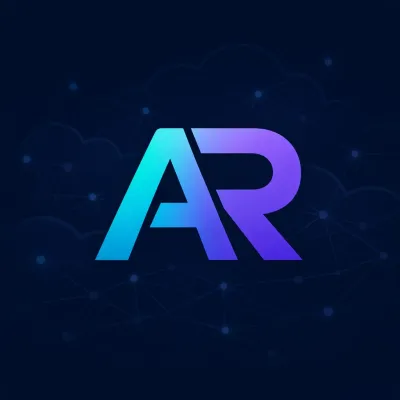

Multi-Cloud Architect
Adam Roffler
AWS and Google Cloud. 9+ years designing, securing and automating enterprise cloud infrastructure.

About
From managing network operations centers and racking servers in hospital datacenters to architecting serverless applications at enterprise scale, I've built infrastructure across the entire evolution of modern computing.
I started in the trenches: managing NOCs, deploying fiber, building VMware clusters, and keeping 500+ virtual desktops running in healthcare environments. Then in 2017, I made the jump to cloud and never looked back. Today I'm a Senior Cloud Engineer III at 27Global, working as a multi-cloud architect across AWS and Google Cloud for several clients at once: modernizing fragile workloads, building compliance-regulated environments in AWS GovCloud and GCP Assured Workloads, and deploying enterprise generative AI on Amazon Bedrock. Before that I spent years automating everything from patching thousands of instances to multi-account AWS architectures with Control Tower and Organizations.
What sets me apart? I speak both languages. I can architect a serverless application AND explain why your datacenter engineer is worried about network latency. I've debugged physical fiber connections and Lambda cold starts. I've managed Cisco firewalls and cloud-native security policies. This perspective helps me build better solutions and bridge the gap between traditional IT and cloud-native teams.
- Years in Cloud & DevOps
- 9+
- AWS Accounts Managed
- 10+
- Cloud Certifications
- 6
- Instances Patched at Scale
- 1000s
Skills
AWS (Expert)
Google Cloud
Infrastructure as Code & Automation
Containers & Orchestration
CI/CD Pipelines
Security & Observability
Cloud Architecture & Design
Generative AI Infrastructure
Experience
-
Senior Cloud Engineer III
27Global
Multi-cloud architect at a technology consultancy, serving concurrent clients across AWS and Google Cloud. Re-platformed a production e-commerce site from a single EC2 instance onto ECS Fargate, Aurora, and CloudFront with zero-downtime releases. Architected an enterprise generative AI platform on Amazon Bedrock in AWS GovCloud, federating Microsoft Entra ID with IAM Identity Center and building per-user cost attribution. Design Google Cloud Assured Workloads environments for regulated workloads, lead architecture reviews of failing production platforms, and built a governed GCP sandbox for internal engineers.
-
Principal Cloud Ops Engineer
EverBright
Subject matter expert on cloud architecture and security, advising cross-functional teams and leadership on AWS design decisions. Designed enterprise architectures managing 10+ accounts using Control Tower and AWS Organizations. Architected disaster recovery solutions across distributed multi-account environments. Deployed enterprise security with GuardDuty, Security Hub, and automated remediation. Owned network security architecture including B2B VPN tunnels. Managed large-scale EKS clusters and CI/CD pipelines via GitHub Actions with automated testing and security scanning across multiple accounts.
-
Senior DevOps Engineer
EverBright
Developed and maintained large-scale Terraform and CloudFormation stacks for enterprise AWS infrastructure. Built automation tooling in Python and Go to enhance cross-team workflows. Designed serverless automation with AWS Lambda for patching, credential management, and agent deployment across AWS and Azure. Managed CI/CD pipelines and code review processes via GitHub.
-
Senior DevOps Cloud Engineer
Aon
Developed enterprise-level Terraform deployments for AWS hub/spoke account models at organizational scale. Designed Lambda-based automation for patching, keystore management, and cross-cloud agent deployment. SME on AWS SAM and SSM Automation. Built automated pipelines from GitLab CI/CD to JFrog Artifactory. Created reusable Terraform module libraries adopted across the AWS organization. Built scaled developer platforms with ECS, API Gateway, Lambda, Aurora DB, and CI/CD pipelines.
-
Senior DevOps Engineer
2nd Watch
Lead engineer on enterprise patching solution built on AWS Systems Manager, automated with CodePipeline and CodeBuild, patching thousands of instances at scale. SME on AWS SAM and SSM Automation; developed serverless architecture on SAM/SAR for client deployments. Led internal effort to create a fully reusable Terraform module library.
-
DevOps & Platform Services Engineer
2nd Watch
Made the pivot from traditional infrastructure to cloud. Developed Lambda and SSM automation to reduce manual engineering overhead. Led client migrations from legacy agent-based platforms to modern IAC-deployed systems using CloudFormation and Terraform. Automated deployment of third-party security tools using Ansible, Shell, and SSM.
-
IT Tech II/III & Systems Administrator
Healthcare & NOC
Built the foundation: managed NOC operations, deployed VMware/Citrix environments serving 500+ users, handled EMR systems in healthcare, migrated 1200+ AD users, and managed physical infrastructure. This is where I learned how things really work.
Certifications
- Solutions Architect AssociateAWS Certified · held 2017–2022
- Developer AssociateAWS Certified · held 2017–2022
- SysOps AdministratorAWS Certified · held 2017–2022
- Cloud PractitionerAWS Certified · held 2017–2022
- Microsoft Certified: Azure FundamentalsAzure Fundamentals
- Azure Virtual MachinesAzure Fundamentals
- VMware VCA6 – Data Center VirtualizationAdditional Certifications
- PowerShell CertifiedAdditional Certifications
- CJIS Security Level 3Additional Certifications
- AWS Business & Technical ProfessionalAdditional Certifications
Currently pursuing: Google Cloud Professional Cloud Architect
What I Bring
Day-One Impact
I've built enterprise AWS environments from scratch multiple times. I don't need ramp-up time on your cloud stack. I've already solved the problems you're hiring for.
Security-First Mindset
Every architecture I build starts with security. GuardDuty, Security Hub, automated remediation. I don't bolt security on at the end, I design it into the foundation.
Force Multiplier
I build reusable Terraform modules, CI/CD standards, and automation tooling that make entire teams more productive, not just my own work faster.
Bilingual Engineer
I translate between executives and engineers. I can whiteboard an architecture for a CTO and then write the Terraform to deploy it the same afternoon.
Projects
Cloud & Infrastructure
GCP Secure Landing Zone
Terraform landing zone built on NIST 800-53 Moderate and Google's Enterprise Foundation Blueprint, scoped to one folder. A guard script refuses any plan that writes above it.
View on GitHub →EKS Platform Lab
Terraform bootstraps EKS 1.31 with Pod Identity, then Argo CD takes over: spot-first Karpenter, ingress, cert-manager and Prometheus, all Git-managed.
View on GitHub →Amazon Bedrock Test Bed
Auditable Bedrock in Terraform: a least-privilege invoke role, every prompt and response logged to S3 and CloudWatch, and a guardrail with PII redaction.
View on GitHub →The Acronomicon
A zero-dependency Go CLI that decodes 917+ cloud, Kubernetes, security and DevOps acronyms, so nobody on the Sev-1 bridge has to ask what CNAPP means.
View on GitHub →
Open source
hub-spoke-eks-cluster
Hub-and-spoke AWS network serving an internal application on EKS to the internet.
View on GitHub →nettools
Network data-gathering tools in Go.
View on GitHub →
Games
-
AgeForge
A Civilization for Your Terminal
An idle civilization game written in Go and shipped as a single binary for macOS, Linux and Windows. Twenty-two ages in seven epochs, from the Primitive Age to the Transcendent Age: 302 buildings, 203 technologies, wonders, trade, factions, catastrophes and prestige, with your town drawn as a glyph map from the buildings you actually own.
22 Ages · 302 Buildings · 203 Technologies · 7 Epochs
Read more → -
Neonferatu
A Retro-Cyberpunk Theme for the Whole Toolchain
Most themes are a color scheme for one editor and a best-effort port for everything else. Neonferatu is a single palette file and a build step: the same colors land in VS Code, Zed, iTerm2, Terminal.app, Claude Code, bat and Sublime. Colors are referenced or derived, never copied, and the build refuses to ship a palette whose contrast, accent separation or background ramp has drifted.
3 Tubes · 8 Targets · 0 Dependencies
See it →
Contact
I'm always open to discussing new projects, creative ideas, or opportunities to be part of your vision.